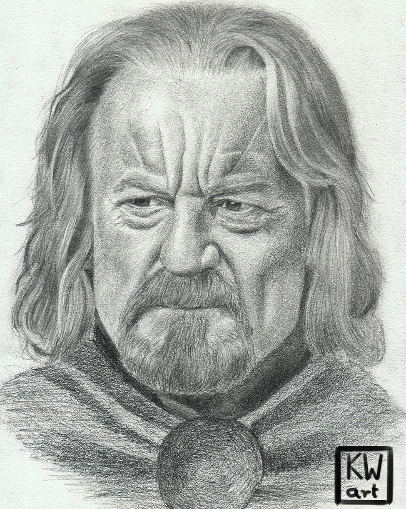
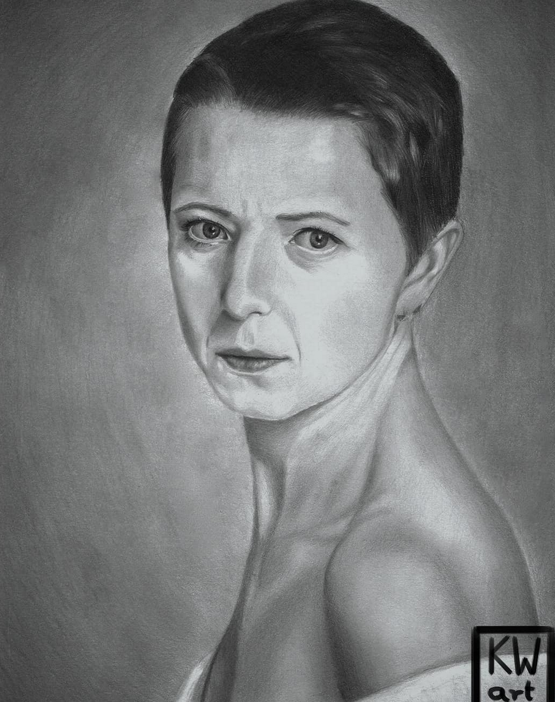
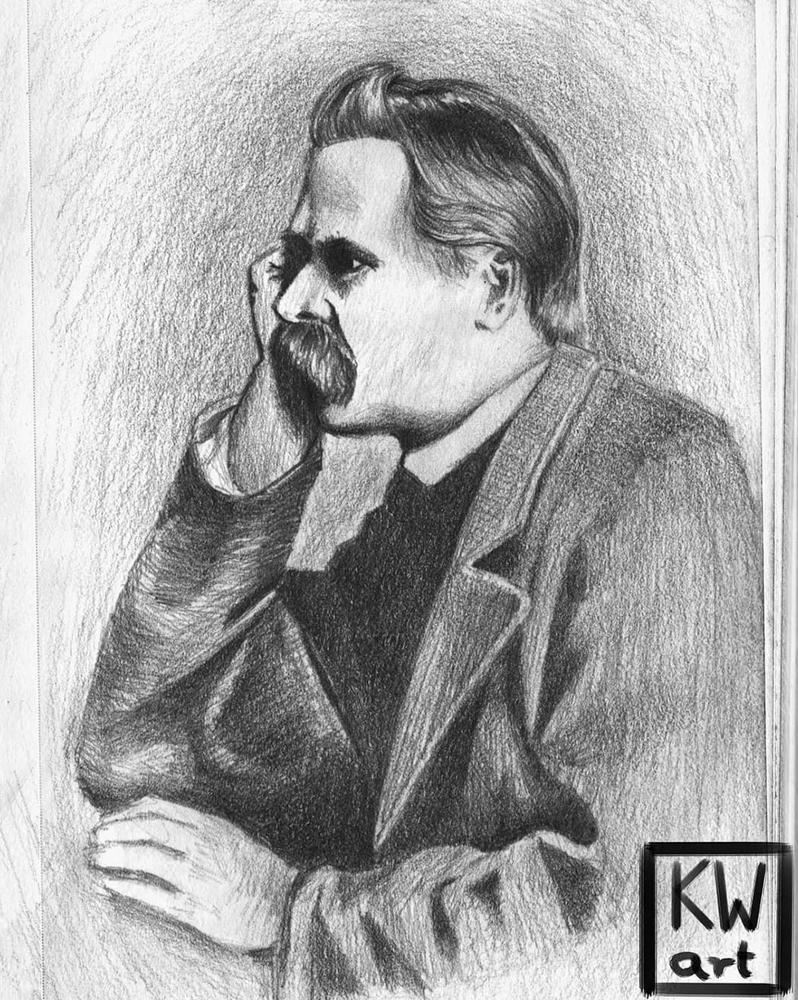
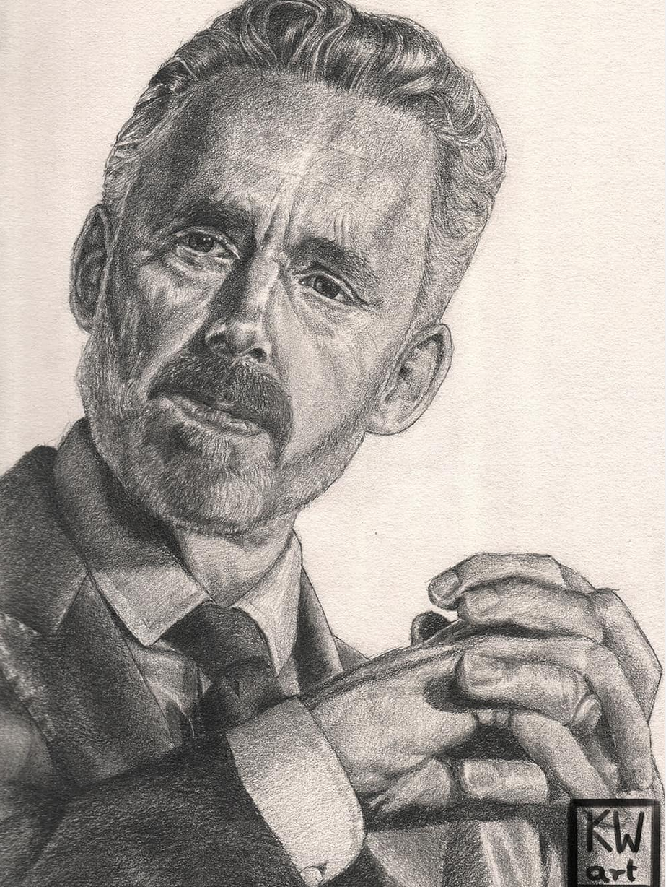
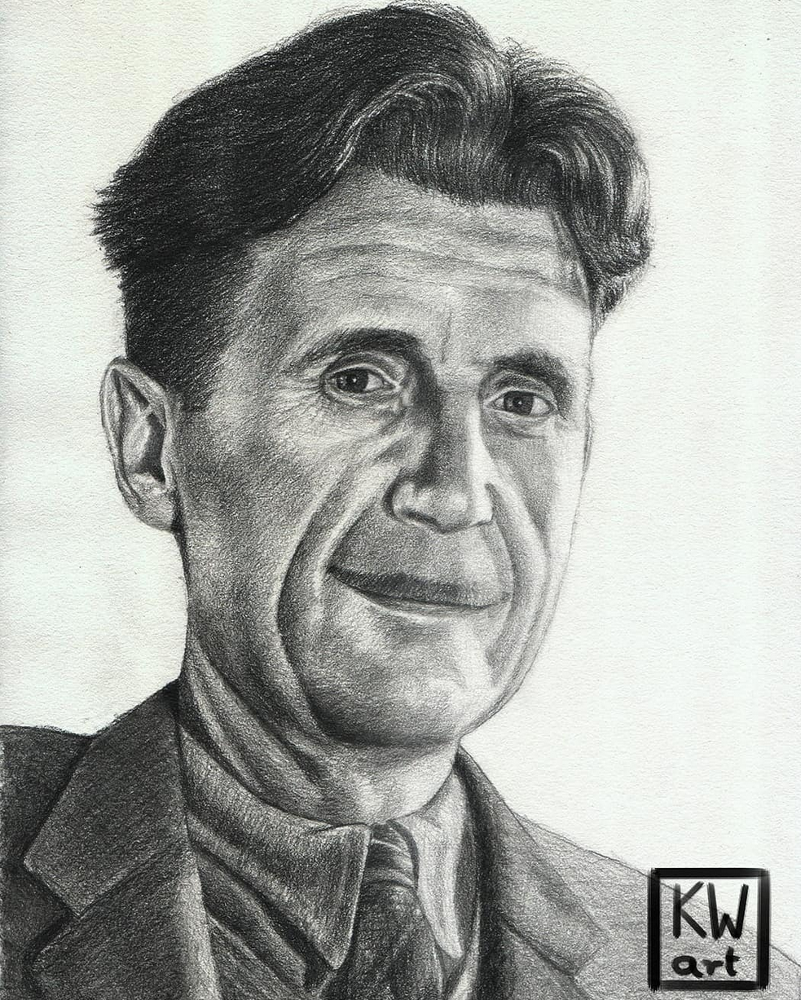
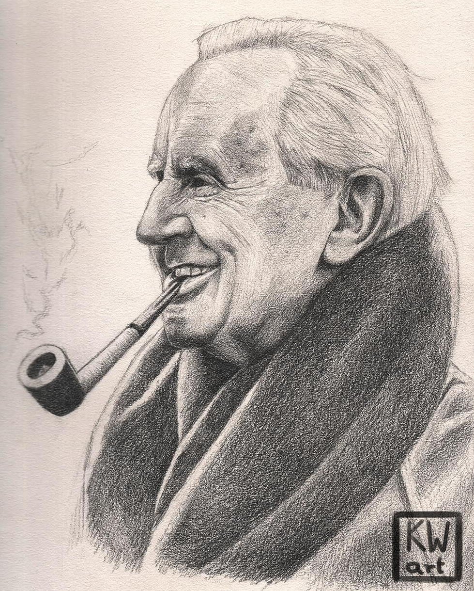
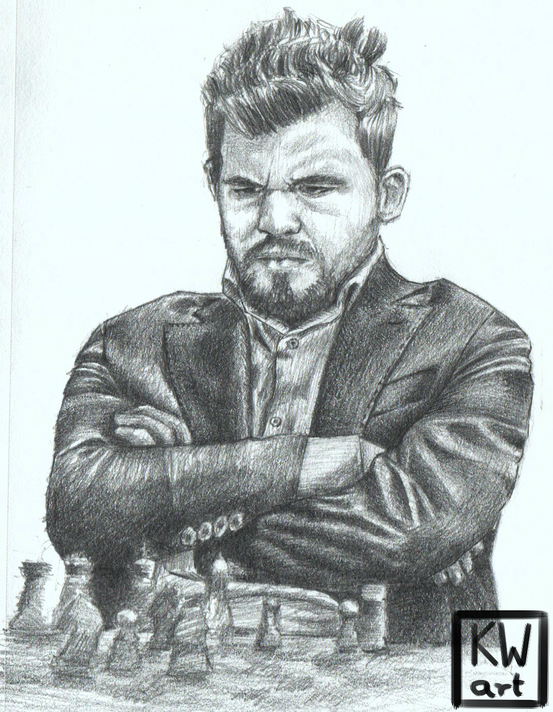

Postać z mitologii Tolkiena czyli Gandalf Portret wykonany ołówkiem na formacie 26x19cm
Theoden, król Rohanu jest jedną z ulubionych postaci ze Śródziemia artysty. Portret wykonany ołówkiem na formacie 26x19cm
 Portret wykonany ołówkiem na formacie A4
Portret przedstawiający Fryderyka Nietzschego. Persona na pewno zasługująca na coś więcej niż szybki portret na formacie 14x9 cm
Portret przedstawiający Jordana B. Petersona. Peterson wykonany ołówkiem w szkicowniku. Format na jakim został wykonany to 26x19cm.
George Orwell wybitny pisarz i publicysta. Chyba każdy z nas słyszał jego najsłynniejszych dziełach czyli o "Folwarku zwierzęcym" i "roku1984". Portret wykonany ołówkiem na formacie 26x19cm
Wykonany ołówkiem na formacie 26x19cm portret przedstawiający Mistrza Tolkiena.
Szachowy rysunek przedstawiający Arcymistrza, Magnusa Carlsena czyli najlepszego szachistę na świecie. Rysunek wykonany ołówkiem na małym w przeciwieństwie do wielkości osoby przedstawionej, na nim formacie, bo to zaledwie 10x14 cm